Automatische vertaling
Dit artikel is automatisch vertaald vanuit de oorspronkelijke Engelse versie.
Context engineering voor AI-agents: context windows, geheugen, tools en guardrails
TL;DR
Context engineering is de pipeline die bepaalt wat het model ziet op het moment van beslissen: instructies, voorbeelden, kennis, geheugen, skills, tools, guardrails. De meeste productie-agents werken of breken op deze laag. Hieronder staat de blauwdruk waar ik steeds op terugkom, met de patronen die ik echt gebruik.
Dezelfde agent die een demo van 30 minuten glansrijk doorstaat, kan op dag drie in productie instorten. Vrijwel altijd heeft die failure niets met het model te maken en alles met wat er in de context zat toen het de verkeerde keuze maakte. Een verouderde memory. Een doc dat niet meer relevant is. Een toolbeschrijving die is gaan afwijken. Een vage instructie.
Context engineering is wat je doet om dat te voorkomen: bewust ontwerpen wat het model vóór elke beslissing ziet, binnen een budget. Dit artikel loopt door de patronen heen die ik gebruik.
Waarom context engineering belangrijk is voor AI-agents
Een customer-supportagent draait drie weken en handelt 200 tickets af. Daarna begint hij productdetails te hallucineren, klanten door elkaar te halen en de verkeerde API's aan te roepen. Het model is niet slechter geworden. De context wel.
Vier dingen zijn in 2025 veranderd waardoor dit pijnlijker is dan vroeger. Agents zijn gestopt chatbots te zijn en zijn acties gaan uitvoeren, wat betekent dat één slechte contextbeslissing kan doorwerken in een plan van tien stappen in plaats van één slecht antwoord op te leveren. Gecentraliseerd geheugen en standaarden zoals MCP maken het mogelijk om persoonlijke context veilig te laden, maar alleen als je die laag goed ontwerpt — zonder governance lek je PII of blaas je het venster op. Hybride retrieval, reranking en graph-aware retrieval zijn allemaal volwassener geworden, wat hallucinaties en tokens reduceert, mits je queries daadwerkelijk naar de juiste strategie routeert. En de meeste agentic pilots die ik zie vastlopen, lopen vast op contextontwerp en governance, niet op modelkwaliteit. Een bewust ontworpen contextlaag is wat ze deblokt.
Belangrijke concepten voor beginners
Een paar termen die in de post steeds terugkomen:
- Context window: het werkgeheugen van het model. De maximale hoeveelheid tekst (in tokens) waar het in één beslissing naar kan kijken. Ga je eroverheen, dan crasht het model of vergeet het het begin.
- Tokens: de eenheid waarin tekst wordt opgeknipt. Grofweg 1.000 tokens per 750 woorden.
- Attention budget: taalmodellen besteden aandacht aan elk paar tokens, dus voor n tokens zijn er n² relaties. Naarmate de context groeit, wordt dat budget dun uitgesmeerd, en verliezen tokens in het midden ten opzichte van het begin en het einde.
- Embeddings: numerieke representaties van tekst. Daarmee kun je op betekenis zoeken, zodat een query naar "dog" ook "puppy" kan vinden.
- JSON Schema: een standaardmanier om de vorm van JSON-data te beschrijven. Je gebruikt het om het model te dwingen specifieke velden uit te geven, zoals
{"answer": "...", "citations": [...]}. - MCP (Model Context Protocol): een open standaard waarmee AI-modellen via een gemeenschappelijke interface met externe data en tools kunnen praten. Zie het als een USB-poort om een agent te koppelen aan je lokale bestanden, databases of Slack.
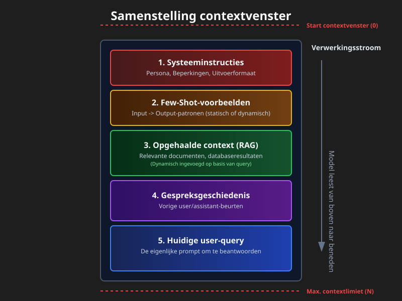
Wat is de contextlaag?
Een pipeline plus een policy die per stap input selecteert en structureert, controls toepast (format, veiligheid, policy) en het model precies genoeg, just-in-time context geeft.
Zie het als de assemblagelijn die exact voorbereidt wat het model nodig heeft om een goede beslissing te nemen.
Context is een eindige resource. Modellen hebben, net als mensen met beperkt werkgeheugen, een attention budget dat afneemt naarmate de context groeit. Elke nieuwe token verbruikt daar een deel van. Het engineeringprobleem is het vinden van de kleinste set high-signal tokens die je het antwoord geeft dat je wilt.
Er is niet één canonieke decompositie — verschillende teams shippen verschillende stacks. De stack die ik gebruik ziet er zo uit:
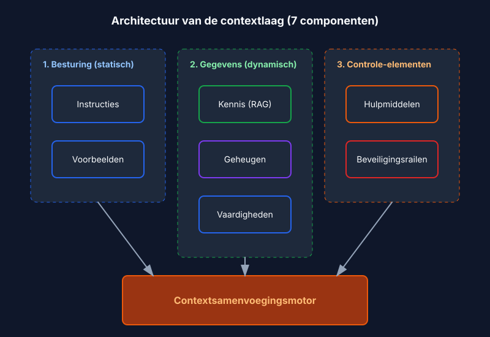
1) Instructies
Een duurzaam contract voor gedrag: rol, toon, constraints, outputschema, evaluatiedoelen. Moderne modellen respecteren instructiehiërarchieën (system > developer > user), dus gebruik die hiërarchie expliciet in plaats van alles in één blok te proppen.
Je grijpt naar instructies wanneer je consistente output nodig hebt (reports, SQL, API-calls, JSON) of wanneer je policy moet afdwingen — PII redigeren, verzoeken weigeren voor dingen die je niet ondersteunt, nooit interne URL's opnemen. De patronen die in de praktijk werken zijn de voor de hand liggende: houd policyblokken gescheiden van de user-taak, stuur deterministische downstream code aan met JSON Schemas, en splits system-, developer- en user-berichten zodat het model weet uit welke stem elke instructie komt.
Een eenvoudig voorbeeld van een policyblok:
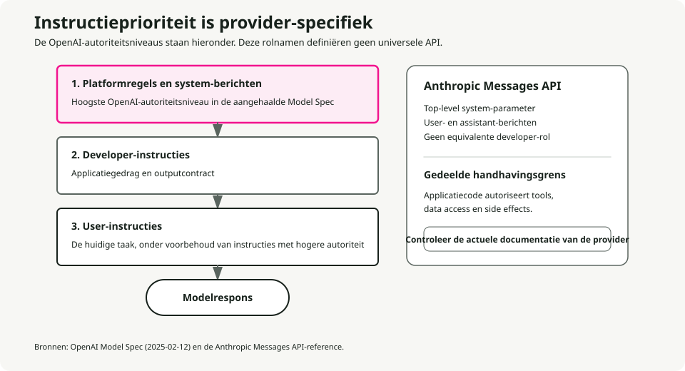
SYSTEM RULES
- Role: support assistant for ACME.
- Always output valid JSON per AnswerSchema.
- If a request needs account data, ask for the account ID.
- Never include secrets or internal URLs.
Schema-guided reasoning (SGR)
De nuttigste upgrade op "geef het model instructies" is om die instructies structureel te maken. Stuur de agent aan met JSON Schemas voor het plan, toolargumenten, tussenresultaten en het eindantwoord. Het model produceert en consumeert JSON bij elke stap, en je code valideert dat voordat er iets anders gebeurt. Dit vermindert ambiguïteit, maakt retries deterministisch en verbetert veiligheid omdat types en verplichte velden door de hele loop heen worden afgedwongen.
De flow is kort. Definieer schemas voor Plan, ToolArgs, StepResult en FinalAnswer. Bij elke stap geeft het model JSON uit dat overeenkomt met een daarvan. Je code valideert. Als validatie faalt, doe je één automatische repair-poging (bijvoorbeeld ontbrekende verplichte velden vullen met verstandige defaults). Faalt repair, dan weiger je en log je het.
Concreet: in plaats van dat het model zegt "I'll search for the customer's tickets," geeft het uit
{
"action": "call_tool",
"tool": "search_tickets",
"args": { "customer_id": "A-123", "limit": 10 },
"expected_schema": "TicketList"
}
en je code valideert args tegen het schema van de tool voordat je de API aanroept.
2) Voorbeelden
Een paar korte input-outputparen die exact laten zien welk format, welke toon en welke stappen het model moet volgen. Gebruik voorbeelden wanneer je een specifieke template nodig hebt (tabellen, JSON, SQL, API-calls) of wanneer je domeinspecifieke formuleringen en een consistente toon wilt.
Een paar regels die ik steeds opnieuw leer. Laat in je canonieke demo exact de doelstructuur zien, geen parafrase ervan. Combineer goede voorbeelden met slechte — het contrast tussen een typische fout en het gewenste resultaat leert meer dan twee correcte outputs. Combineer je JSON Schema met twee of drie korte demo's in plaats van één lange. En houd ze kort: veel kleine gerichte demo's verslaan bijna altijd één groot, uitwaaierend voorbeeld.
3) Kennis
Het model gronden met externe feiten: vector- en keyword-retrieval, reranking, graph queries, web fetches, enterprise-bronnen. Je hebt dit nodig wanneer het model het antwoord niet uit zijn weights kan weten — verse feiten, private feiten of alles wat een bronvermelding nodig heeft.
De retrieval-stack waar je standaard mee wilt beginnen is hybride (BM25 plus dense) met daarbovenop een reranker om de tokenrekening te verkleinen. Gebruik graph-aware retrieval (GraphRAG) wanneer het antwoord documenten moet kruisen, en adaptive RAG wanneer één querytype niet overal past — soms wil je geen retrieval, soms één keer, soms een iteratieve loop.
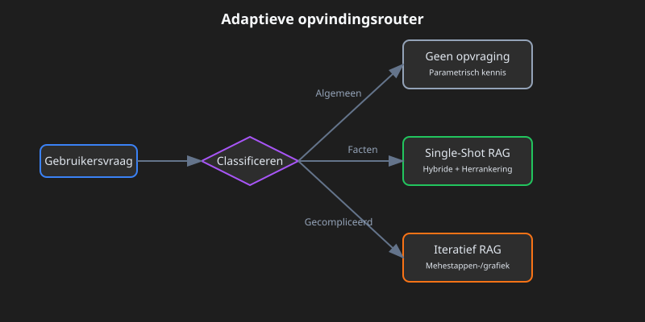
De parameters die kwaliteit echt bewegen zijn kleiner dan de literatuur doet vermoeden. Chunk op semantische grenzen (paragrafen, secties) in plaats van op vaste grootte — chunking is de ene beslissing die retrievalkwaliteit op echte documenten maakt of breekt. Begin voor top-k bij 10 tot 20 voor hybride retrieval, en rerank dan terug naar 3 tot 5. Gebruik MMR met λ rond 0,7 als standaard voor diversiteit. En neem altijd bronverwijzingen en directe citaten op in je output, niet omdat het model zonder die zou hallucineren, maar omdat ze het antwoord controleerbaar maken.
4) Geheugen
Duurzame context over turns en sessies heen. Kortetermijngeheugen houdt conversatiestatus vast. Langetermijngeheugen bewaart user- en app-feiten. Episodisch geheugen bewaart gebeurtenissen. Semantisch geheugen bewaart entiteiten. Gebruik geheugen wanneer je personalisatie en continuïteit wilt, of wanneer meerdere agents over dagen of weken coördineren.
De patronen die productie overleven: entity memories (namen, ID's, voorkeuren) met expliciete expiry-policies; scoped retrieval uit een long-term store op basis van vectors, key-value pairs of een graph; en geheugen koppelen aan compressie zodat groot kortetermijngeheugen wordt samengevat in plaats van afgekapt. Het samenvattingsdeel komt terug in Contextcompressiestrategieën [7].
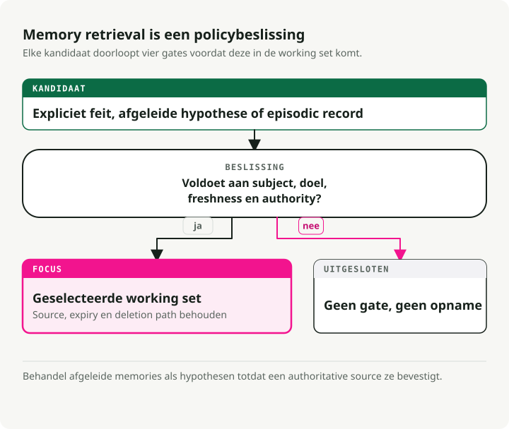
Dit is de expiry-policy die ik standaard gebruik:
- Voorkeuren: 365 dagen.
- Episodische events: 90 dagen.
- Kortetermijnstatus: wissen aan het eind van de sessie.
- Entiteiten: geen expiry, maar wel periodieke validatie.
5) Skills
Compositieerbare domeinexpertise die agents ontdekken en on demand laden. Anthropic's Agent Skills-framework is het referentieontwerp voor het vastleggen van procedurele kennis en het delen ervan tussen agents.
Een skill bouwen voor een agent is als een onboardinggids samenstellen voor een nieuwe medewerker. — Anthropic Engineering Blog
Je wilt skills wanneer je domeinspecifieke expertise nodig hebt (PDF-manipulatie, git, data-analyse), wanneer je herbruikbare procedures wilt over agents of organisaties heen, of wanneer je een agent wilt specialiseren zonder gedrag hard te coderen in de system prompt.
Wat is een skill?
Een skill is een georganiseerde map met instructies, scripts en resources die de agent kan ontdekken en laden wanneer relevant:
- Een
SKILL.md-bestand met een naam, een beschrijving (in YAML frontmatter) en de instructies van de skill. - Extra bestanden — referenties, templates — die de skill kan inladen.
- Code: Python of andere uitvoerbare bestanden die de agent als tools kan uitvoeren.
Skill-patroon: progressive disclosure
Het principe dat skills schaalbaar maakt is progressive disclosure: laad informatie alleen wanneer nodig. (Zie Het principe van progressive disclosure hieronder voor de algemene versie.) Bij startup zitten alleen skillnamen en beschrijvingen in de context — genoeg voor de agent om te weten wat beschikbaar is. De volledige SKILL.md wordt pas geladen wanneer de skill wordt geactiveerd. Dieper liggende gerefereerde bestanden worden pas geladen wanneer de geactiveerde skill ze nodig heeft.
Dit betekent dat skillinhoud in feite onbegrensd is. De agent betaalt geen context voor wat hij niet gebruikt.
┌─────────────────────────────────────────────────────────┐
│ Context Window │
├─────────────────────────────────────────────────────────┤
│ System Prompt │
│ ├── Core instructions │
│ └── Skill metadata (name + description only) │
│ • pdf: "Manipulate PDF documents" │
│ • git: "Advanced git operations" │
│ • context-compression: "Manage long sessions" │
├─────────────────────────────────────────────────────────┤
│ [User triggers task requiring PDF skill] │
│ │
│ → Agent reads pdf/SKILL.md into context │
│ → Agent reads pdf/forms.md (only if filling forms) │
│ → Agent executes pdf/extract_fields.py (without loading)│
└─────────────────────────────────────────────────────────┘
Best practices voor skills
Anthropic's richtlijnen komen neer op vier dingen. Begin met evaluatie: laat de agent representatieve taken uitvoeren, vind de gaten en schrijf skills om die te dichten. Structureer voor schaal: splits een grote SKILL.md op in aparte bestanden, en houd paden gescheiden wanneer contexten elkaar uitsluiten. Kijk hoe de agent je skills gebruikt en itereer op namen en beschrijvingen tot de triggernauwkeurigheid hoog is. En laat de agent helpen: vraag Claude om succesvolle aanpakken vast te leggen in herbruikbare skillcontent.
Security-overwegingen
Skills introduceren per definitie kwetsbaarheden — ze geven de agent nieuwe capabilities via instructies en code. Installeer alleen uit bronnen die je vertrouwt. Audit voor gebruik, inclusief meegeleverde bestanden, codedependencies en netwerkverbindingen. Let vooral op instructies die de skill met externe services verbinden, want daar begint exfiltratie meestal.
6) Tools
Function calls die data ophalen of acties uitvoeren: API's, databases, search, file ops, computer use. Je wilt tools wanneer je deterministische side effects en datafideliteit nodig hebt, of wanneer je plan-call-verify-continue-lussen orkestreert.
De patronen waar ik standaard mee begin zijn tool-first planning met post-call validators, structured outputs tussen stappen, en expliciete fallbacks wanneer tools falen (retry, dan degraderen, dan human-in-loop).
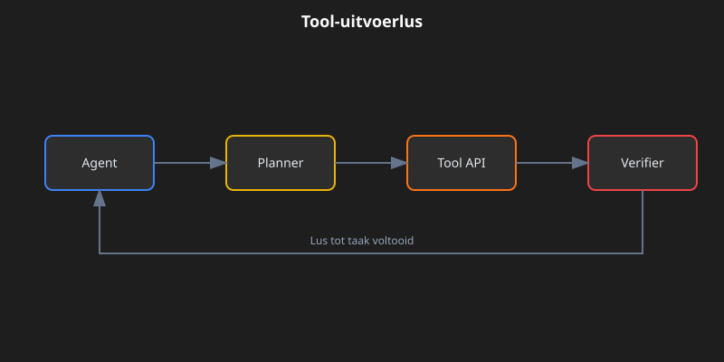
Drie concepten waar je precies in moet zijn. Idempotent betekent veilig opnieuw proberen zonder side effects (GET wel, POST of DELETE niet). Postconditions zijn de checks die je na elke call uitvoert: niet-lege result, status gelijk aan "ok", geldige JSON. De fallback-keten is de volgorde die je doorloopt als iets fout gaat: retry, dan graceful degraderen, dan escaleren naar een mens.
Een opmerking over MCP
MCP wordt de standaard voor hoe agents verbinden met tools en data [6]. In plaats van voor elke service een custom API-wrapper te schrijven, draai je voor elke service een MCP-server en ontdekt de agent automatisch de beschikbare tools en resources.
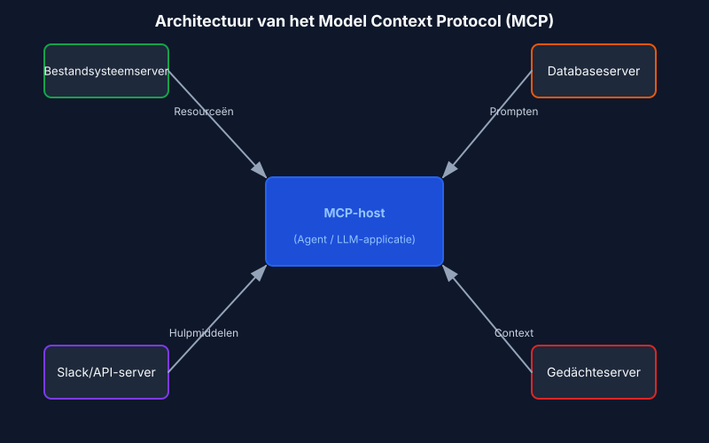
7) Guardrails
Input- en outputvalidatie, safety-filters, jailbreakverdediging, schema-enforcement, content policy. Je wilt guardrails wanneer je compliance of merkintegriteit nodig hebt, en wanneer je getypeerde correcte output en veilig gedrag wilt.
De vorm die standhoudt in productie: programmeerbare rails (policyregels plus acties), schema- en semantische validators (types, regex, evals) en centraal beleid met observability (dashboards, red-teaming).
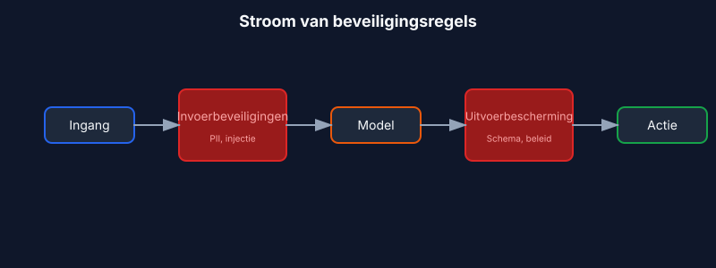
De keuze tussen repair en refuse is waar teams het meestal fout doen. Schemaovertredingen krijgen één automatische repair-poging; faalt die, dan weiger je met een duidelijke foutmelding. Policyovertredingen slaan de repair-poging volledig over — direct weigeren en een veilig alternatief voorstellen.
Vier veelvoorkomende guardrailtypes dekken de meeste productiebehoeften. Input guards vangen PII, prompt injection en toxiciteit voordat het model ze ziet. Output guards dwingen schema, content policy en feitelijke consistentie af. Tool guards regelen rate limiting, permissiechecks en kostendrempels. Memory guards redigeren PII vóór opslag en dwingen expiry af.
Concreet voorbeeld: een supportbot die een ticket beantwoordt
Dit is wat de contextlaag samenstelt wanneer een klant vraagt "Why is my API key not working?":
- Instructies: rol is een behulpzame supportassistent voor ACME, citeer bronnen, geef JSON
{answer, sources, next_steps}terug. - Voorbeelden: twee korte V→A-paren die toon en JSON-vorm laten zien, één over API-keys, één over billing.
- Kennis: doorzoek het helpcenter en product-runbooks op "API key troubleshooting"; voeg relevante citaten toe.
- Geheugen: klantnaam "Sam", account-ID "A-123", plan "Pro", laatste interactie "API key created 3 days ago".
- Skills: laad de skill
ticket-handlingmet troubleshootingprocedures, escalatiepolicies en resolutietemplates. - Tools:
search_tickets(customer_id),check_api_key_status(key),create_issue(description). - Guardrails: redigeer API-keywaarden in output; als het schema faalt, repair één keer; als policy wordt geschonden (bijvoorbeeld een verzoek om productiedata te verwijderen), weiger beleefd.
Het model krijgt al deze gestructureerde context, genereert een antwoord en de guardrails valideren dat voordat het teruggaat naar de klant.
Diepgaande blik op contextfundamenten
Voordat de patronen logisch worden, moet de anatomie duidelijk zijn.
De anatomie van context
Context heeft verschillende afzonderlijke componenten, elk met andere kenmerken en constraints.
System prompts leggen de identiteit, constraints en gedragsrichtlijnen van de agent vast. Ze laden één keer bij sessiestart en blijven gedurende de conversatie bestaan. De truc is de juiste hoogte te vinden: specifiek genoeg om gedrag echt te sturen, maar flexibel genoeg om ruimte voor oordeel te laten. Ga je te laag, dan ship je fragiele hardcoded regels. Ga je te hoog, dan heeft het model geen concreet signaal om op te handelen.
Organiseer prompts in afzonderlijke secties met XML-tags of Markdown-headings:
<BACKGROUND_INFORMATION>
You are a Python expert helping a development team.
Current project: Data processing pipeline in Python 3.9+
</BACKGROUND_INFORMATION>
<INSTRUCTIONS>
- Write clean, idiomatic Python code
- Include type hints for function signatures
- Add docstrings for public functions
</INSTRUCTIONS>
<TOOL_GUIDANCE>
Use bash for shell operations, python for code tasks.
File operations should use pathlib for cross-platform compatibility.
</TOOL_GUIDANCE>
Tooldefinities specificeren welke acties de agent kan uitvoeren. Elke tool heeft een naam, beschrijving, parameters en returnformat. De beschrijvingen sturen het gedrag daadwerkelijk. Slechte beschrijvingen dwingen de agent te gokken; goede beschrijvingen bevatten gebruikscontext, voorbeelden en verstandige defaults. Het consolidatieprincipe: als een menselijke engineer niet eenduidig kan zeggen welke tool je moet gebruiken, dan zal een agent het ook niet beter doen. Dat is je signaal om tools samen te voegen of te hernoemen.
Retrieved documents halen relevante content tijdens runtime de context in in plaats van alles vooraf te laden. De just-in-time-aanpak houdt lichte identifiers bij — file paths, opgeslagen queries, weblinks — en laadt de echte data alleen wanneer nodig.
Message history is de conversatie tussen user en agent, inclusief eerdere queries, responses en redenering. Voor langlopende taken kan dit het venster gaan domineren. Het werkt ook als scratchpad memory, waar agents voortgang en taakstatus bijhouden.
Tool outputs zijn de resultaten van agentacties: bestandsinhoud, zoekresultaten, command output, API-responses. In typische agenttrajecten nemen observaties uiteindelijk meer dan 80% van de totale context in [4]. Dat getal is de druk achter technieken zoals observation masking en compaction.
Context windows en attention-mechanica
Taalmodellen berekenen attention als paarrelaties tussen elk paar tokens. Voor n tokens zijn dat n² relaties. Naarmate context groeit, raakt het vermogen van het model om die relaties vast te leggen steeds dunner uitgesmeerd.
Modellen nemen hun attentionpatronen ook mee uit trainingsdata, en die data wordt gedomineerd door kortere sequenties. Het model heeft dus relatief weinig ervaring met afhankelijkheden over de hele context. Het eindresultaat is een attention budget dat leegloopt naarmate de context groeit.
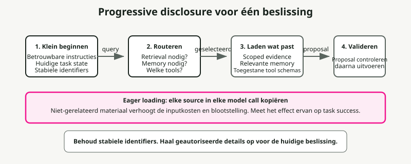
Het principe van progressive disclosure
Progressive disclosure beheert context efficiënt door informatie alleen te laden wanneer nodig. Bij startup laden agents alleen skillnamen en beschrijvingen — genoeg om te weten wanneer een skill relevant kan zijn. Volledige content laadt alleen wanneer die voor specifieke taken wordt geactiveerd.
# Instead of loading all documentation at once:
# Step 1: Load summary
docs/api_summary.md # Lightweight overview
# Step 2: Load specific section as needed
docs/api/endpoints.md # Only when API calls needed
docs/api/authentication.md # Only when auth context needed
Contextkwaliteit versus contextkwantiteit
De aanname dat grotere context windows geheugenproblemen oplossen is empirisch ontkracht. Context engineering betekent de kleinst mogelijke set high-signal tokens vinden.
Verschillende krachten duwen je richting efficiëntie. Verwerkingskosten groeien onevenredig mee met contextlengte — niet dubbel bij dubbele tokens, maar exponentieel meer in tijd en compute. Modelprestaties dalen voorbij bepaalde contextlengtes, zelfs wanneer het venster technisch meer ondersteunt. En lange inputs blijven duur, zelfs met prefix caching.
Het leidende principe is informativiteit boven volledigheid. Neem op wat relevant is voor de beslissing die nu genomen moet worden, sluit uit wat dat niet is.
Patronen van contextdegradatie
Taalmodellen vertonen voorspelbare degradatiepatronen naarmate context groeit. Die kennen is wat je in staat stelt failures te diagnosticeren en robuuste systemen te ontwerpen.
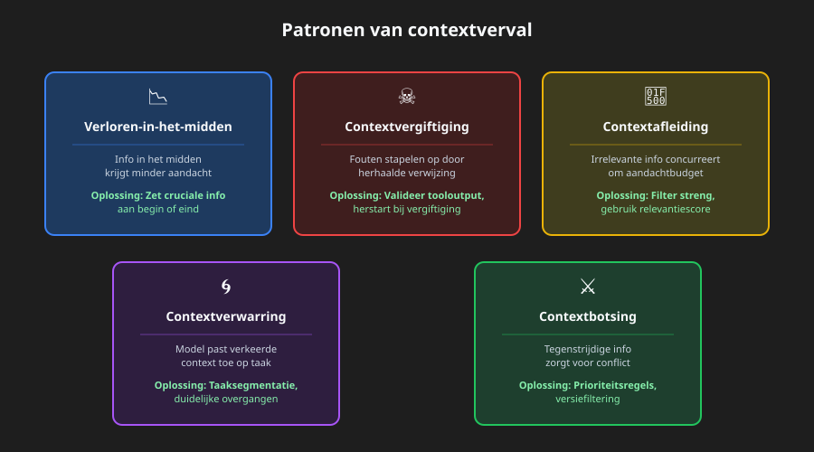
Het lost-in-the-middle-fenomeen
Het best gedocumenteerde degradatiepatroon is "lost-in-middle", waarbij modellen U-vormige attention-curves laten zien [1]. Informatie aan het begin en einde van context krijgt betrouwbare aandacht; informatie in het midden lijdt onder 10-40% lagere recall accuracy.
Het mechanisme is concreet. Modellen wijzen enorme aandacht toe aan de eerste token (vaak de BOS-token) om interne toestanden te stabiliseren, waardoor een "attention sink" ontstaat die attention budget opslokt [2]. Naarmate context groeit, winnen tokens in het midden onvoldoende attention weight.
De praktische fix is kritieke informatie aan het begin of einde van context te zetten. Gebruik samenvattingsstructuren die belangrijke informatie naar attention-gunstige posities brengen.
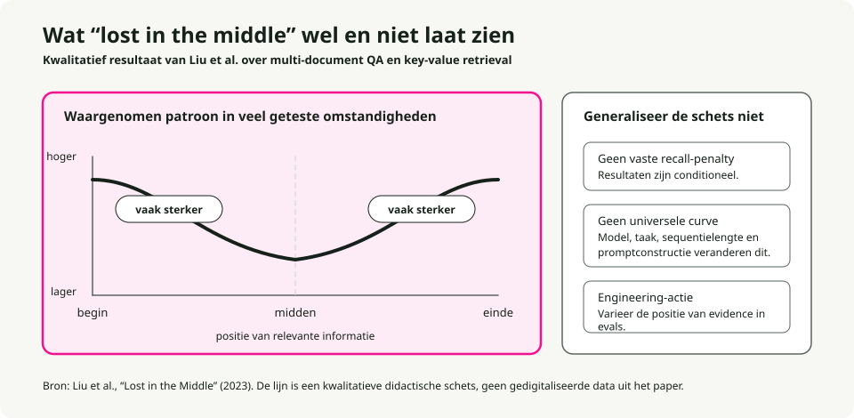
# Organize context with critical info at edges
[CURRENT TASK] # At start
- Goal: Generate quarterly report
- Deadline: End of week
[DETAILED CONTEXT] # Middle (less attention)
- 50 pages of data
- Multiple analysis sections
- Supporting evidence
[KEY FINDINGS] # At end
- Revenue up 15%
- Costs down 8%
- Growth in Region A
Voor instructies die je absoluut niet kwijt kunt raken, dupliceer je ze aan zowel het begin als het einde. Omdat modellen sterk letten op beide randen, krijgt dezelfde instructie op beide posities attention ongeacht contextlengte. Dit is de juiste zet voor system constraints die altijd gevolgd moeten worden, eisen aan outputformat en safety policies.
# Example: Duplicating critical instructions
[SYSTEM - START]
CRITICAL: Always respond in JSON format. Never include PII.
[... long context with documents, history, tools ...]
[SYSTEM - REMINDER]
CRITICAL: Always respond in JSON format. Never include PII.
Context poisoning
Context poisoning is wat er gebeurt wanneer hallucinaties, fouten of onjuiste informatie in de context terechtkomen en zich versterken door herhaalde verwijzing. Zodra context poisoned is, creëert die feedbacklussen die de verkeerde overtuiging versterken.
Het komt meestal via drie deuren binnen: tool outputs met fouten of onverwachte formats, retrieved documents met onjuiste of verouderde informatie, en door het model gegenereerde samenvattingen die hallucinaties introduceren en daarna blijven bestaan.
Je merkt het aan symptomen: slechtere outputkwaliteit op taken die eerder wel slaagden, agents die de verkeerde tools of parameters aanroepen, en hardnekkige hallucinaties die correctiepogingen overleven.
Herstel is mechanisch. Kap de context af tot vóór het poisoningpunt, noteer expliciet de poisoning en vraag om her-evaluatie, of herstart met schone context waarbij je alleen geverifieerde informatie behoudt.
Context distraction
Context distraction ontstaat wanneer context zo lang wordt dat het model te veel focust op wat jij hebt meegegeven ten koste van wat het in training heeft geleerd. Onderzoek laat zien dat zelfs één irrelevant document prestaties verlaagt op taken met relevante documenten [8]. Het effect volgt een stapfunctie — de aanwezigheid van elke distractor triggert degradatie.
Het kerninzicht: modellen kunnen irrelevante context niet overslaan. Ze moeten aandacht besteden aan alles wat je meegeeft, en die aandacht is zelf al de afleiding, zelfs wanneer de irrelevante informatie duidelijk nutteloos is.
De mitigatie is relevantiefiltering vóór het laden van documenten, namespacing om irrelevante secties makkelijk te negeren, en je afvragen of informatie überhaupt in de context moet staan of via een tool call benaderd kan worden.
Context confusion
Context confusion is wat er gebeurt wanneer irrelevante informatie responses beïnvloedt op manieren die kwaliteit verlagen. Als je iets in de context zet, moet het model er aandacht aan besteden, en dat betekent dat het irrelevante informatie kan meenemen, tooldefinities kan gebruiken die voor een andere taak bedoeld zijn, of constraints uit een andere context kan toepassen.
Signalen om op te letten: responses die het verkeerde aspect van de query adresseren, tool calls die logisch lijken voor een andere taak, outputs die eisen uit meerdere bronnen door elkaar halen.
De fix is expliciete taaksegmentatie (verschillende taken krijgen verschillende context windows), duidelijke overgangen tussen contexten, en state management dat context isoleert.
Context clash
Context clash ontstaat wanneer opgehoopte informatie direct botst en tegenstrijdige sturing creëert. Dit verschilt van poisoning, waarbij één stuk fout is — bij clash spreken meerdere correcte stukken elkaar tegen.
Veelvoorkomende bronnen zijn multi-source retrieval met tegenstrijdige informatie, versieconflicten (verouderde en huidige informatie tegelijk in context) en perspectiefconflicten (geldige maar incompatibele standpunten).
Los het op met expliciete conflictmarkering, prioriteitsregels die vastleggen welke bron voorrang heeft, en versie-filtering die verouderde informatie uitsluit.
Modelspecifieke degradatiedrempels
Onderzoek geeft concrete data over wanneer degradatie begint. De effectieve contextlengte — waar modellen optimale prestaties vasthouden — is vaak aanzienlijk kleiner dan het geadverteerde maximum [3]:
| Model | Maximale context | Effectieve context | Notities over degradatie |
|---|---|---|---|
| GPT-4 Turbo | 128K tokens | ~32K tokens | Retrieval degradeert na 32K, accuracy lijdt na 64K |
| GPT-4o | 128K tokens | ~8K tokens | Complexe NIAH-accuracy daalt van 99% naar 70% bij 32K |
| Claude 3.5 Sonnet | 200K tokens | ~4K tokens | Complexe NIAH-accuracy daalt van 88% naar 30% bij 32K |
| Gemini 1.5 Pro | 1M tokens | ~128K tokens | 99% NIAH-recall bij 1M, beste long-context-prestaties |
| Gemini 2.0 Flash | 1M tokens | ~32K tokens | Complexe NIAH-accuracy daalt van 94% naar 48% bij 32K |
Bronnen: RULER-benchmark [3], NoLiMa-benchmark [9], Google technical reports.
De belangrijkste bevinding uit RULER [3]: slechts 50% van de modellen die 32K+ context claimen, behoudt bevredigende prestaties bij 32K tokens. Bijna perfecte scores op simpele needle-in-a-haystack-tests vertalen zich niet naar echt begrip van lange context — complexe redeneertaken degraderen veel steiler.
Contextcompressiestrategieën
Terminologienoot: contextcompressie is een overkoepelende term die samenvatten (voor conversatiegeschiedenis en memory), observation masking (voor tool outputs) en selectief trimmen omvat [5]. De memory-samenvatting die in de sectie Geheugen werd genoemd, is één toepassing van deze bredere compressiestrategieën.
Wanneer agentsessies miljoenen tokens aan conversatiegeschiedenis genereren, is compressie niet langer optioneel. De naïeve aanpak is agressieve compressie om tokens per request te minimaliseren. Het juiste optimalisatiedoel is tokens per task [4]: totaal aantal tokens dat wordt verbruikt om de taak af te ronden, inclusief re-fetchingkosten wanneer compressie iets kritieks verliest.
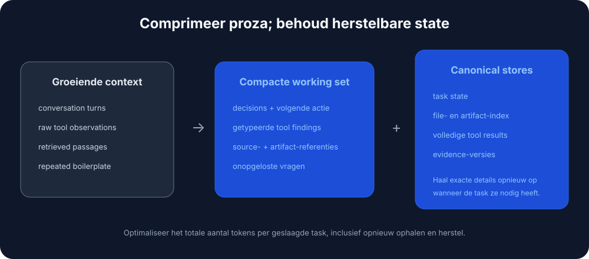
Wanneer compressie nodig is
Activeer compressie wanneer agentsessies de limieten van het context window overschrijden, wanneer agents dingen gaan "vergeten" zoals welke bestanden ze hebben aangepast, wanneer je een lange codingsessie debugt die zich over uren uitstrekt, of wanneer prestaties merkbaar verslechteren in uitgebreide conversaties.
Drie productieklare benaderingen
Anchored iterative summarization onderhoudt een gestructureerde persistente samenvatting met expliciete secties voor sessie-intentie, bestandswijzigingen, beslissingen en volgende stappen. Wanneer compressie triggert, vat het alleen het nieuw afgekapt deel samen en voegt dat samen met de bestaande samenvatting. De reden dat dit werkt is dat structuur behoud afdwingt: aparte secties werken als checklist die de summarizer moet invullen, wat stille drift voorkomt.
## Session Intent
Debug 401 Unauthorized error on /api/auth/login despite valid credentials.
## Root Cause
Stale Redis connection in session store. JWT generated correctly but session could not be persisted.
## Files Modified
- auth.controller.ts: No changes (read only)
- config/redis.ts: Fixed connection pooling configuration
- services/session.service.ts: Added retry logic for transient failures
- tests/auth.test.ts: Updated mock setup
## Test Status
14 passing, 2 failing (mock setup issues)
## Next Steps
1. Fix remaining test failures (mock session service)
2. Run full test suite
3. Deploy to staging
Opaque compression produceert gecomprimeerde representaties die zijn geoptimaliseerd voor reconstructiefideliteit. Het haalt de hoogste compressieratio's (99%+) maar offert interpreteerbaarheid op. Gebruik dit wanneer maximale tokenbesparing telt en re-fetching goedkoop is.
Regenerative full summary genereert bij elke compressie een gedetailleerde gestructureerde samenvatting. De output is leesbaar, maar details kunnen vervallen over herhaalde compressiecycli.
Vergelijking van compressie
Onderzoek van Factory.ai [4] vergeleek compressiestrategieën op echte productie-agentsessies:
| Methode | Compressieratio | Kwaliteitsscore | Beste voor |
|---|---|---|---|
| Anchored Iterative | 98.6% | 3.70/5 | Lange sessies, file tracking |
| Regenerative | 98.7% | 3.44/5 | Duidelijke fasegrenzen |
| Opaque | 99.3% | 3.35/5 | Maximale besparing, korte sessies |
De metrics lezen:
- Compressieratio (98.6%): percentage verwijderde tokens. Een ratio van 98.6% betekent dat van 100.000 tokens aan geschiedenis er slechts 1.400 overblijven.
- Kwaliteitsscore (3.70/5): gemeten via probe-based evaluation — na compressie krijgt de agent vragen die vereisen dat specifieke details uit de afgekaptte geschiedenis worden herinnerd (welke bestanden hebben we aangepast, wat was de foutmelding). 3.70/5 betekent dat de agent ongeveer 74% van de probes correct beantwoordde.
- 0.7% extra tokens: bij vergelijking van anchored iterative (98.6%) met opaque (99.3%) is het verschil 0.7%. Voor een sessie van 100K tokens is dat 1.400 tokens versus 700. Die extra 700 tokens (0.7% van het origineel) kopen 0.35 kwaliteitspunten (3.70 vs 3.35) — significant betere recall van taakkritische details.
Het artifact trail-probleem
Artifact trail integrity is de zwakste dimensie bij alle compressiemethoden, met scores van 2.2-2.5 op 5.0. Coding agents moeten weten welke bestanden ze hebben aangemaakt, aangepast of gelezen, en compressie verliest die informatie vaak.
Aanbeveling: implementeer een aparte artifact-index of expliciete file-state-tracking in de agent-scaffolding, boven op algemene samenvatting.
Strategieën voor compressietriggers
| Strategie | Triggerpunt | Trade-off |
|---|---|---|
| Vaste drempel | 70-80% benutting | Simpel maar kan te vroeg comprimeren |
| Sliding window | Houd laatste N turns + summary | Voorspelbare contextgrootte |
| Op belangrijkheid | Comprimeer lage relevantie eerst | Complex maar behoudt signaal |
| Taakgrens | Comprimeer bij taakafronding | Schone samenvattingen, onvoorspelbare timing |
Probe-based evaluation
Traditionele metrics zoals ROUGE vangen functionele compressiekwaliteit niet. Een samenvatting kan hoog scoren op lexicale overlap en toch net dat ene file path missen dat de agent echt nodig heeft.
Probe-based evaluation meet kwaliteit direct door na compressie vragen te stellen:
| Probetype | Wat het test | Voorbeeldvraag |
|---|---|---|
| Recall | Feitelijk behoud | "What was the original error message?" |
| Artifact | File tracking | "Which files have we modified?" |
| Continuation | Task planning | "What should we do next?" |
| Decision | Redeneerketen | "What did we decide about the Redis issue?" |
Als compressie de juiste informatie heeft behouden, antwoordt de agent correct. Zo niet, dan gokt of hallucineert hij.
Technieken voor contextoptimalisatie
Contextoptimalisatie vergroot effectieve capaciteit via compressie, masking, caching en partitionering. Deze technieken bouwen voort op de Contextcompressiestrategieën hierboven en passen ze systematisch toe voor productie. Goed uitgevoerd kan optimalisatie de effectieve contextcapaciteit verdubbelen of verdrievoudigen zonder een groter model nodig te hebben.
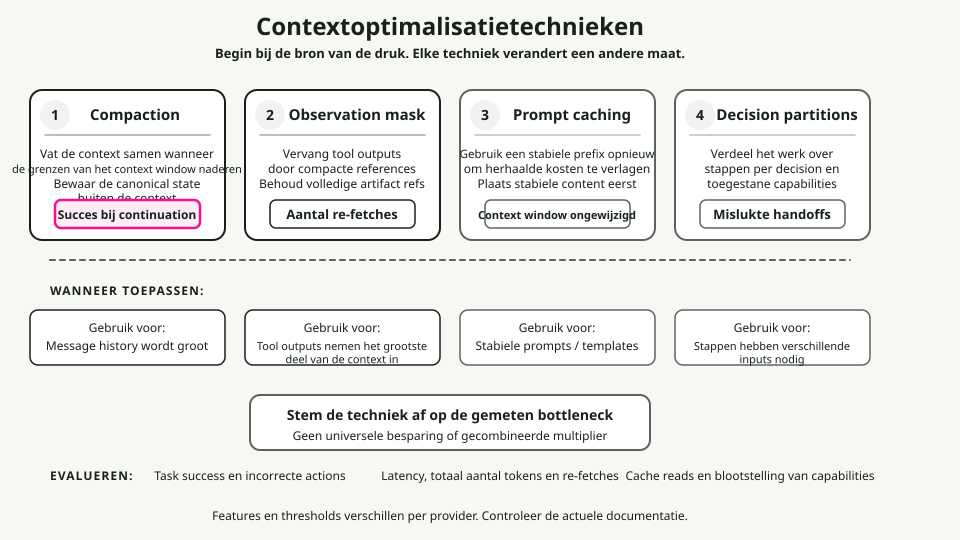
Compaction-strategieën
Compaction vat contextinhoud samen wanneer limieten in zicht komen, en initialiseert daarna opnieuw met de samenvatting. Het doel is content op een high-fidelity-manier te destilleren, zodat de agent met minimale degradatie kan blijven werken.
De prioriteitsvolgorde die ik aanhoud: comprimeer eerst tool outputs (vervang door samenvattingen), dan oude turns (vat vroege conversatie samen), dan retrieved docs (vat samen als recentere versies bestaan). Comprimeer nooit de system prompt.
Wat je bewaart hangt af van het type. Tool outputs: bewaar bevindingen, metrics, conclusies; gooi ruwe verbale output weg. Conversationele turns: bewaar beslissingen, commitments en contextwisselingen; gooi opvulling weg. Retrieved documents: bewaar kernfeiten en claims; gooi ondersteunende uitwerking weg.
Observation masking
Tool outputs kunnen meer dan 80% van het tokengebruik uitmaken [4]. Zodra een agent een tool output heeft gebruikt om een beslissing te nemen, levert het bewaren van de volledige output steeds minder op.
Een beslismatrix voor masking:
| Categorie | Actie | Redenering |
|---|---|---|
| Observaties huidige taak | Nooit masken | Kritiek voor huidig werk |
| Meest recente turn | Nooit masken | Direct relevant |
| Actieve redenering | Nooit masken | Lopende gedachte |
| 3+ turns geleden | Overweeg masking | Doel waarschijnlijk vervuld |
| Herhaalde outputs | Altijd masken | Redundant |
| Boilerplate | Altijd masken | Lage signaalwaarde |
KV-cache-optimalisatie
De KV-cache slaat Key- en Value-tensors op die tijdens inferentie zijn berekend. Caching over requests met identieke prefixes voorkomt herberekening, wat kosten en latency drastisch verlaagt.
Optimaliseer voor caching door stabiele content vooraan te zetten:
# Stable content first (cacheable)
context = [system_prompt, tool_definitions]
# Frequently reused elements
context += [reused_templates]
# Unique elements last
context += [unique_content]
Ontwerp voor cachestabiliteit: vermijd dynamische content zoals timestamps in prompts, gebruik consistente formatting en houd structuur stabiel over sessies heen.
Contextpartitionering
De meest agressieve optimalisatie is werk verdelen over sub-agents met geïsoleerde contexten. Elke sub-agent werkt in een schone context die op zijn subtaak is gericht, zonder opgehoopte context uit andere subtaken mee te dragen.
Voor aggregatie: valideer dat alle partitions zijn afgerond, merge compatibele resultaten en vat samen als de gecombineerde output nog steeds te groot is.
Besliskader voor optimalisatie
Wanneer optimaliseren: contextbenutting overschrijdt 70%, responsekwaliteit daalt in lange conversaties, kosten lopen op door lange contexten, of latency stijgt met de gesprekslengte.
Wat je toepast hangt af van wat domineert. Dominante tool outputs betekenen observation masking. Dominante retrieved documents betekenen samenvatten of partitionering. Dominante message history betekent compaction met samenvatten. Als meerdere componenten domineren, combineer je strategieën.
Redelijke doelmetrics: compaction met 50-70% tokenreductie bij minder dan 5% kwaliteitsverlies; masking met 60-80% reductie in gemaskeerde observaties; cache-optimalisatie met 70%+ hit rate voor stabiele workloads.
Hoe je dit opbouwt (stap voor stap)
Een praktisch recept voor de contextlaag. Begin eenvoudig en voeg alleen complexiteit toe wanneer er iets stukgaat.
Stap 1: schrijf het contract
Definieer wat je agent moet doen en hoe die zich moet gedragen. Schrijf de policies op system-niveau (rol, constraints, safety rules) en de richtlijnen op developer-niveau (outputformat, toon, eisen aan bronvermelding). Definieer JSON Schemas voor elke outputvorm: AnswerSchema, PlanSchema, StepResultSchema.
Stap 2: kies een retrievalstrategie
Begin met hybride retrieval (BM25 plus vector) en een reranker. Routeer daarna op querytype. Algemene kennis heeft geen retrieval nodig. Verse of private feiten hebben single-shot RAG nodig (hybride plus rerank). Complexe meerledige queries hebben iteratieve RAG nodig (opbreken in subqueries).
Stap 3: ontwerp geheugen
Splits kortetermijngeheugen (conversatiestatus) van langetermijngeheugen (user facts, geschiedenis). Kortetermijngeheugen bewaart conversatiestatus en de laatste paar turns, en wordt gewist aan het eind van de sessie. Langetermijngeheugen bewaart user-entiteiten, voorkeuren en episodische events. Stel expiry-regels in: voorkeuren 365 dagen, episodische events 90 dagen, kortetermijn alleen per sessie. Voeg PII-redactie toe voordat je iets opslaat.
Stap 4: specificeer tools
Definieer duidelijke toolsignatures met validatie- en fallbackstrategieën. Schrijf voor elke tool een duidelijke docstring, een inputschema en een outputschema. Markeer of de tool idempotent is. Definieer postconditions en de fallback-keten. Valideer toolargumenten tegen het schema voordat je aanroept.
Stap 5: installeer guardrails
Voeg input- en outputvalidatie, safety-filters en policy enforcement toe. De minimale checklist:
- [ ] Redigeer PII (e-mails, SSN's, creditcards) vóór verwerking.
- [ ] Valideer alle outputs tegen JSON Schema.
- [ ] Blokkeer prompt-injectionpogingen.
- [ ] Pas rate limiting toe op tool calls.
- [ ] Log alle policyovertredingen voor auditing.
Stap 6: voeg observability en evals toe
Instrumenteer de contextlaag zodat je die kunt debuggen. Trace welke contextbronnen geladen zijn; tokentellingen (input, output, kosten); retrievalmetrics (query, top-k, geciteerde bronnen); tool calls (welke tools, argumenten, resultaten, failures); en guardrail-triggers (inputblocks, outputrepairs, policyrefusals).
De metrics die het meest tellen zijn exactness (schemavaliditeit, target 99%+), groundedness (citation rate, target 90%+ voor knowledge queries), latency (target onder 2s p95) en kosten (target onder $0.05 per query).
Stap 7: itereer
Voeg geavanceerde patronen pas toe wanneer je duidelijke limieten raakt. Voeg reflections toe wanneer de foutmarge boven 5% komt. Voeg planners toe wanneer taken routinematig meer dan drie opeenvolgende stappen vereisen. Voeg sub-agents toe wanneer je afzonderlijke domeinen hebt die geïsoleerde context nodig hebben.
Anti-patterns
Veelgemaakte fouten die agentische systemen om zeep helpen. Vermijd deze.
1. Stuff-the-window
Dump elk mogelijk document, memory en voorbeeld bij elke query in de context. Het resultaat is context rot — de signaal-ruisverhouding stort in, en je raakt alle degradatiepatronen tegelijk. Zie Patronen van contextdegradatie voor de details over distraction en confusion. De fix is adaptief routeren en compressie en masking toepassen. Zie Technieken voor contextoptimalisatie.
2. Niet-gevalideerde toolresultaten
De agent roept een tool aan, krijgt data terug en voert die direct aan het model zonder te controleren. Malformed data laat downstreamlogica crashen. Null-resultaten veroorzaken hallucinaties. Dit is een van de primaire vectoren voor Context poisoning. Valideer toolresultaten altijd tegen het schema en de postconditions.
3. Alles in one-shot
System policy, developer-richtlijnen, voorbeelden, user-query, geheugen en kennis allemaal in één monolithische prompt gepropt. Geen scheiding van concerns. Het context window vult zich met dubbele boilerplate. Scheid duurzame instructies van stapspecifieke context, en gebruik de patronen voor KV-cache-optimalisatie hierboven.
4. Onbegrensd geheugen
Sla elke user-interactie voor altijd op en laad alles bij elke query. De context vult zich met verouderde, irrelevante memories, en je neemt gratis privacyrisico mee. Zie het lost-in-the-middle-fenomeen voor waarom inhoud in het midden toch al genegeerd wordt. Stel retention policies in, implementeer scoped retrieval en redigeer PII.
5. Overal RAG
Haal documenten op voor elke query, zelfs "What is 2+2?" of "Hello." Dat verspilt latency en kosten, en retrieval injecteert ruis die Context distraction triggert. Implementeer adaptive RAG-routing met een classifier of een kleine set heuristieken.
6. Guardrail-triggers negeren
Je logt guardrail-overtredingen maar bekijkt ze nooit. Echte aanvallen glippen langs je heen. Echte UX-problemen blijven onzichtbaar. Schemarepairs zouden niet vaak mogen voorkomen — als dat wel zo is, zijn je instructies onduidelijk. Bekijk guardrail-triggers wekelijks.
7. Geen evals
Ship contextlaagwijzigingen zonder testen. Stille regressies, geen manier om varianten objectief te vergelijken. Definieer vijf tot tien evalscenario's vóór je shipt, run ze op elke wijziging en gebruik probe-based evaluation om problemen met compressiekwaliteit te vangen.
Quick wins: ship deze vandaag
Als je al een agent in productie hebt en direct verbeteringen wilt, begin hier. Elke stap kost minder dan een dag.
1. Voeg outputschemavalidatie toe
Vangt de meeste fouten af voordat ze gebruikers bereiken.
from jsonschema import validate, ValidationError
def validate_output(output: dict) -> dict:
try:
validate(instance=output, schema=ANSWER_SCHEMA)
return output
except ValidationError as e:
repaired = auto_repair(output, e)
validate(instance=repaired, schema=ANSWER_SCHEMA)
return repaired
2. Instrumenteer basis-tracing
Debug aanzienlijk sneller wanneer dingen stukgaan.
logger.info(json.dumps({
"request_id": request_id,
"query": query,
"context_loaded": {"instructions": True, "memory": True, "knowledge": True},
"tokens": {"input": 1200, "output": 150},
"latency_ms": 1120,
"result": "success"
}))
3. Splits system- en user-berichten
Vermindert tokenverspilling aanzienlijk door KV-cache-optimalisatie mogelijk te maken.
messages = [
{"role": "system", "content": SYSTEM_POLICY + DEVELOPER_GUIDELINES},
{"role": "user", "content": f"Query: {query}\nMemory: {memory}\nKnowledge: {knowledge}"}
]
4. Voeg eisen aan bronvermelding toe
Bouwt vertrouwen op, maakt auditing mogelijk, vermindert hallucinaties.
5. Stel memory-expiry in
Voorkomt contextvervuiling en privacyrisico's.
def load_memory(customer_id: str) -> dict:
entries = db.get_memory(customer_id)
now = datetime.now()
return {
k: v for k, v in entries.items()
if v.get("expires_at", now) > now
}
Conclusie
Context engineering is de discipline die demo-agents van productie-agents scheidt. Het model is niet slechter geworden — de context wel. De vier hefbomen die je moet kennen: fundamenten (context is eindig, attention is beperkt, progressive disclosure is de unlock), degradatiepatronen (lost-in-middle, poisoning, distraction, confusion, clash), compressie (tokens-per-task boven tokens-per-request, gestructureerde samenvattingen), en optimalisatie (compaction, masking, caching, partitionering).
Begin met de quick wins. Voeg alleen complexiteit toe wanneer je een echte limiet raakt. En meet alles — je kunt niet verbeteren wat je niet traceert.
Dit artikel bevat content uit de collectie Agent Skills for Context Engineering, een set herbruikbare kennismodules voor het bouwen van betere AI-agents.
References
-
Liu, N. F., Lin, K., Hewitt, J., Paranjape, A., Bevilacqua, M., Petroni, F., & Liang, P. (2023). "Lost in the Middle: How Language Models Use Long Contexts." arXiv preprint arXiv:2307.03172. https://arxiv.org/abs/2307.03172
- Belangrijkste bevinding: 10-40% lagere recall accuracy voor informatie in het midden van context versus begin/einde.
-
Xiao, G., Tian, Y., Chen, B., Han, S., & Lewis, M. (2023). "Efficient Streaming Language Models with Attention Sinks." ICLR 2024. https://arxiv.org/abs/2309.17453
- Introduceert het "attention sink"-fenomeen waarbij LLM's onevenredig veel aandacht toewijzen aan initiële tokens.
-
Hsieh, C. Y., et al. (2024). "RULER: What's the Real Context Size of Your Long-Context Language Models?" COLM 2024. https://arxiv.org/abs/2404.06654
- Belangrijkste bevinding: Slechts 50% van de modellen die 32K+ context claimen, behoudt bevredigende prestaties bij 32K tokens.
-
Factory.ai Research. (2025). "Evaluating Context Compression for AI Agents." https://www.factory.ai/blog/evaluating-context-compression
- Bron voor vergelijkingen van compressiestrategieën, optimalisatie op tokens-per-task en de methodologie van probe-based evaluation.
-
Li, Y., et al. (2023). "Compressing Context to Enhance Inference Efficiency of Large Language Models." EMNLP 2023.
- Onderzoek naar selectieve contextpruning met self-information-metrics.
-
Anthropic. (2024). "Model Context Protocol (MCP) Specification." https://modelcontextprotocol.io/
- Officiële specificatie van de MCP-standaard voor AI-toolintegratie.
-
LangChain/LangGraph. (2024). "How to add memory to the prebuilt ReAct agent." https://langchain-ai.github.io/langgraph/how-tos/create-react-agent-memory/ — Laat zien dat samenvatten één techniek is om geheugen binnen contextlimieten te beheren.
-
Yoran, O., Wolfson, T., Bogin, B., Katz, U., Deutch, D., & Berant, J. (2024). "Making Retrieval-Augmented Language Models Robust to Irrelevant Context." ICLR 2024. https://arxiv.org/abs/2310.01558
- Belangrijkste bevinding: Zelfs één irrelevant document kan RAG-prestaties significant verlagen en een "distracting effect" creëren.
-
Maekawa, S., et al. (2025). "NoLiMa: Long-Context Evaluation Beyond Literal Matching." ICML 2025. https://arxiv.org/abs/2502.05167
- Belangrijkste bevinding: GPT-4o effectieve context ~8K tokens, Claude 3.5 Sonnet ~4K tokens wanneer latente redenering vereist is (vs. literal matching). Bij 32K tokens daalt GPT-4o van 99.3% naar 69.7% accuracy.
Aanvullende resources
- Anthropic Claude Documentation: Best practices voor long-context-gebruik
- OpenAI Cookbook: Strategieën voor het beheren van context windows
- LangChain Documentation: Memory- en retrievalpatronen
- LlamaIndex Documentation: RAG- en chunkingstrategieën